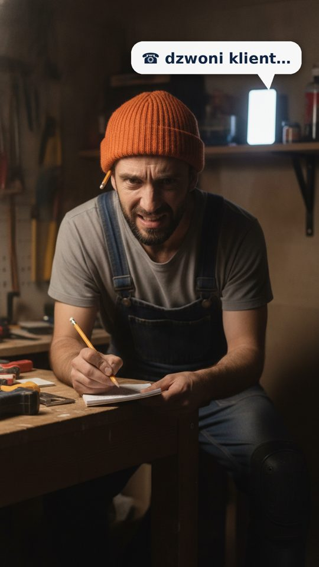
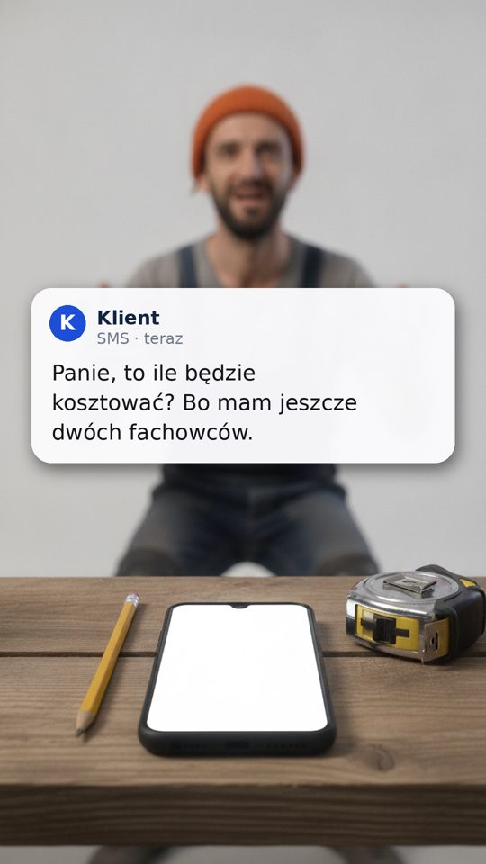
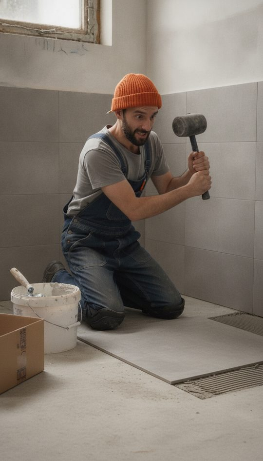
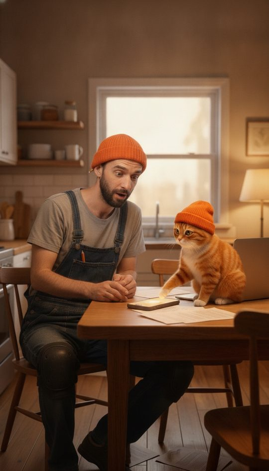
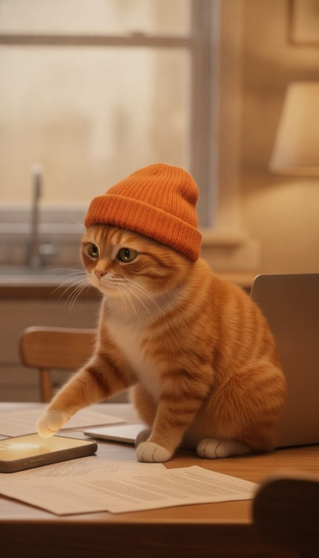
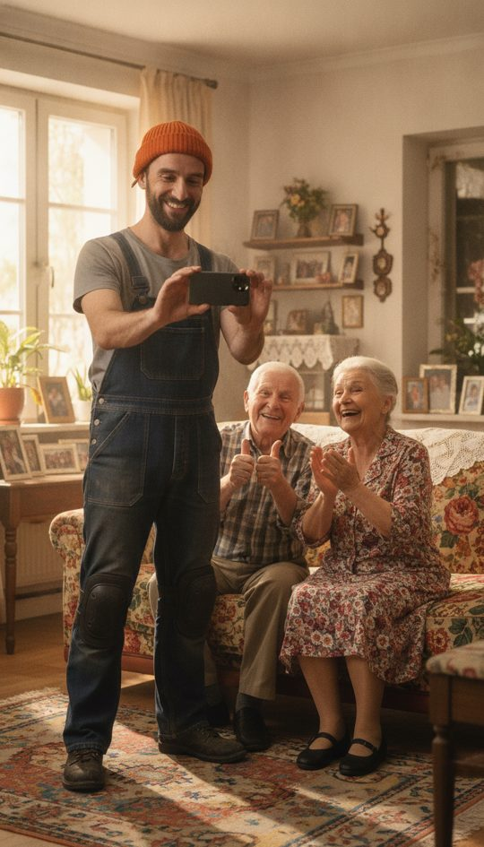
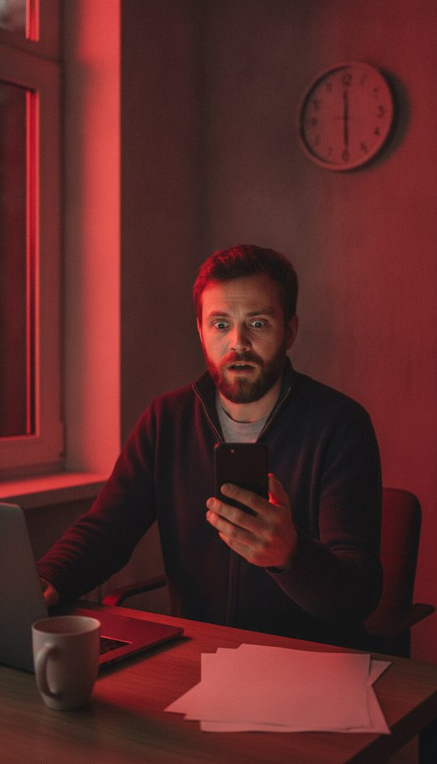
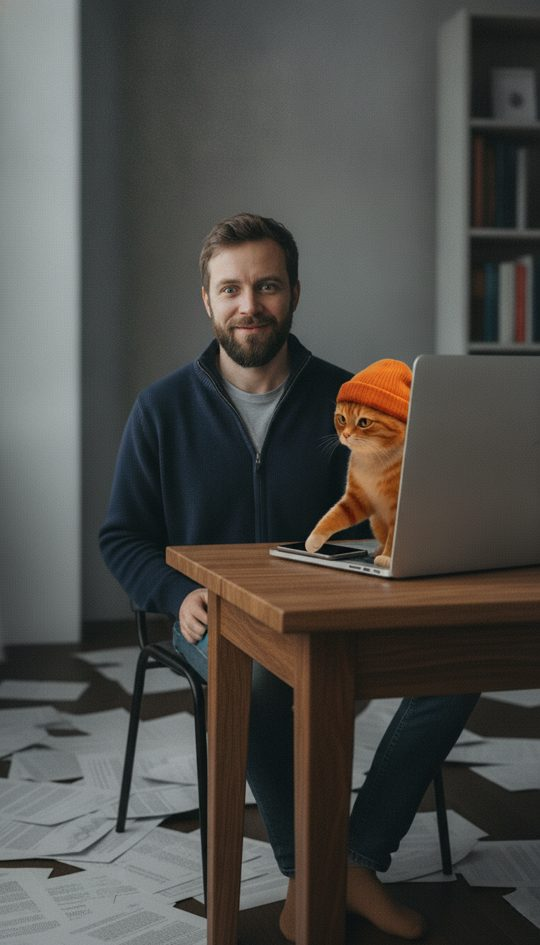

Gotowe: nowe sceny, głosy, nakładki i pierwszy klip. Brakuje ruchu dla pozostałych scen i złożenia filmów — saldo Google AI wyczerpane, czeka na doładowanie.
Klip bez nakładki — SMS i chmurka „dzwoni klient” dochodzą przy montażu (podgląd niżej).
Wycena — klientka:
KSeF — „I wtedy, zupełnym przypadkiem, kot nadepnął na telefon.”

Wycena: Marek liczy w notesie, zdenerwowany; dzwoni telefon na półce

Wycena: Zbliżenie na telefon, przychodzi SMS od klienta

Wycena: Kładzie płytki, obok pusty karton (w ruchu: zagląda, karton spada, łapie się za głowę, obgryza paznokcie)

Wycena: Kot podsuwa telefon, Marek patrzy (w ruchu: głaszcze kota)

Wycena: Zbliżenie: kot z zażenowaniem (w ruchu: kiwa i opuszcza głowę)

Wycena: Klientka mówi nową kwestię (obraz bez zmian)

KSeF: Jeden telefon w ręce (w ruchu: wypada na biurko)
KSeF: Kartki lecą z przodu ekranu, nie z tyłu

KSeF: Siedzi na krześle, kot na biurku (w ruchu: łapa na telefon, ekran się zapala, wstaje)
Odszkodowanie: Kasia szuka w telefonie, czy należy jej się odszkodowanie
Odszkodowanie: Do kolejki wchodzi skruszony kapitan z euro w złożonych dłoniach